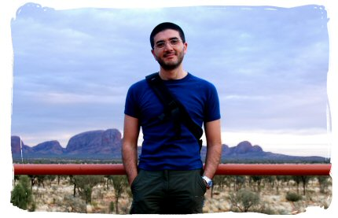

Research Interests
My research activity concerns applications of Operator Algebras methods to Quantum Field Theory.
In particular I have been working on the analysis of small spacetime scale properties of Doplicher-Haag-Roberts superselection sectors, in the
framework of the Buchholz-Verch algebraic approach to the Renormalization Group.
Currently, I'm also working on Quantum Field Theory on Doplicher-Fredenhagen-Roberts Quantum Spacetime and its generalizations.
Last modified: Mar. 3, 2009 by G.M.